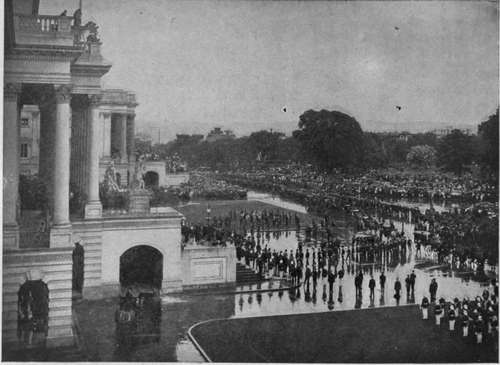

Mckinley In State
Description
This section is from the book "The National Capitol. Its Architecture Art And History", by George C. Hazelton, Jr. Also available from Amazon: The National Capitol Its Architecture Art and History.
Mckinley In State
The remains of President McKinley were brought to Washington, September 16, 1901, from Buffalo, and taken directly to thei White House. At nine o'clock on the morning of the 17th, the parade formed and escorted the body to the rotunda of the Capitol, where the funeral services were to be held. The choir of the Metropolitan M. E. Church, which McKinley had attended, opened the services by singing " Lead, Kindly Light." The Reverend Henry R. Naylor offered the invocation and Bishop Andrews delivered the funeral address. The choir then sang "Sometime We'll Understand." The benediction, which was spoken by Reverend W. H. Chapman, was followed appropriately by the hymn, "Nearer My God to Thee." The rotunda was then cleared; and there the body lay in state until evening, open to the view of the " plain people," who by thousands reverently passed . the casket. President Roosevelt and Ex-President Cleveland were the most distinguished of the auditors of these sad rites at the Capitol.
Superintendent of the Capitol,—Edward Clarke, the veteran Architect of the Capitol, died January 6, 1902. For some time previous to his death, his health had been so impaired that the burden of his work had fallen upon his chief clerk, Elliott Woods, who had been associated with Clarke, except for a short time, since 1885, when Woods came to Washington from Indiana. The law which gave the chief clerk authority thus to act as Architect was approved July 5, 1895, and was passed especially to provide for the exigency caused by the unfortunate condition of the Architect's health. This law provided also that, in case of a vacancy, the chief clerk should perform the duties of Architect until the vacancy had veen filled according to law.
THE REMAINS OF PRESIDENT MCKINLEY BEING BORNE TO THE ROTUNDA.
At the time of the Architect's demise, a strenuous effort was made to oust the chief clerk from the authority so conferred upon him, on the ground principally that he was not an architect and the office of Architect of the Capitol was a traditional one. This argument was somewhat weakened, however, when it was remembered that the great central idea of the Capitol, which is the wonder of the world to-day, was the conception of Doctor Thornton, not an architect; and that Doctor Thornton's masterpiece had succeeded against the plans of architects and in spite of architects—and that largely through the good sense of Washington. Then, too, during the long period from 1828 to 1851, when the marble wings were begun, there had been no Architect of the Capitol, and the building had been successfully managed by the Commissioner of Public Buildings and Grounds. Even the great original work of Architects Walter and Clarke had been largely directed to extending harmoniously the thought of Doctor Thornton.
In the end, and in order, no doubt, to provide for the popular chief clerk, Congress passed a law, approved February 12, 1902, which provided that thereafter the office of Architect of the Capitol should be designated as Superintendent of the Capitol Buildings and Grounds, and that he should.be appointed by the President. This appointment is unique in that it does not have to be confirmed by the Senate. In accordance with this law, on February 20, 1902, President Roosevelt appointed Elliott Woods Superintendent.
Under his direction, but mainly preceding Architect Clarke's death, new steel roofs—facsimiles of the old ones—were erected over Statuary Hall and the Supreme Court Chamber, and the floor, galleries, anterooms and ventilating plant of the Chamber of the House of Representatives remodeled and new mahogany desks provided. The burden of the work incident to changing the old Library rooms on the western front to committee rooms, in the summer of 1900, also fell to the lot of Woods, though suggested in part by Architect Clarke before his death. These rooms command a fine view of the city to the westward. They are commodious, and are rendered attractive by appropriate mural decorations, in each instance illustrative of the character of the committee which makes the room its home. On the main floor are the House committees on Naval Affairs, Patents, District of Columbia, Public Buildings and Grounds, Arts and Expositions and Expenditures in the Treasury Department. On the Senate side are the Senate committee rooms on Enrolled Bills, Pacific Islands and Porto Rico, Foreign Relations, Pensions and Interoceanic Canals. On the gallery floor, on the House side, are the rooms set apart for the House committees on Mileage, Expenditures in the War Department, Pacific Railroads, Coinage, Weights and Measures and Expenditures in the State Department and the Minority room for consultation. On the Senate side of the gallery are located the Senate committees on Railroads, Geological Surveys, Private Land Claims, Improvements in the Mississippi River, Transcontinental Route to Seaboard and Organization of Executive Departments.
Superintendent Woods is an ardent advocate of the extension of the entire east front of the old central structure in accordance with what is known as the " Walter plan." This plan was not made pursuant to any resolution of Congress, but was drawn at the suggestion of President Fillmore, who took an active interest in the growth of the building, and often visited the Architect's offices to discuss with Architect Walter the designs for its improvement. It is thought that this extension will furnish much needed space, besides bettering the proportions of the building, and more especially its relations to the dome. Roscoe Conkling was heard once to remark that the present structure was " a dome with a building under it, instead of a building with a dome upon it".
PROPOSED EXTENSION OF EAST FRONT KNOWN AS "WALTER PLAN".
Continue to: